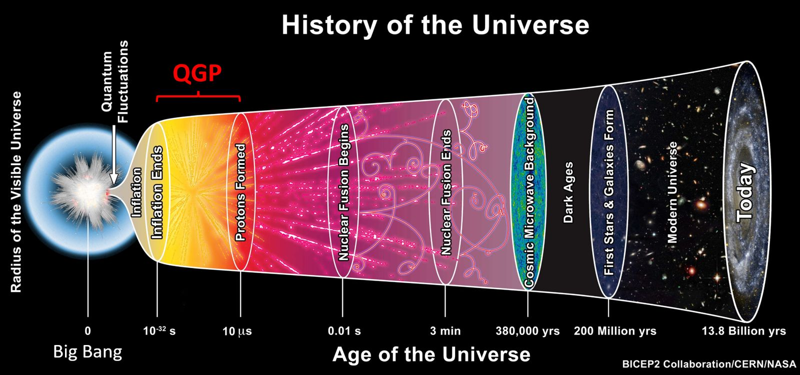

Research
My work spans experimental neutrino physics and high-energy nuclear physics: from the flavour oscillations of neutrinos crossing Japan to the search for a critical point of QCD matter at CERN.
Neutrino oscillations
Neutrinos come in three flavours and change from one to another as they travel. How often this happens depends on the neutrino mixing angles, the mass differences and a possible CP-violating phase, which could help explain why the universe contains more matter than antimatter.
T2K sends a beam of muon neutrinos 295 km from J-PARC in Tokai to the Super-Kamiokande detector, a 50 kt water Cherenkov tank under Mount Ikenoyama. Super-K also records neutrinos made in the atmosphere, which cross the Earth over a wide range of distances and energies.
I work on the joint T2K + Super-K analysis, which fits beam and atmospheric data together. My focus is the detector's momentum (energy) scale: how uncertainties in it are shared between the beam and atmospheric samples, and how those correlations affect the oscillation results. I also help validate results across independent fitting frameworks.
I am also a member of Hyper-Kamiokande, the next-generation water Cherenkov detector being built in Kamioka. With a fiducial volume about eight times that of Super-K and an upgraded J-PARC beam, it aims to establish whether neutrinos violate CP symmetry.

The critical point of strongly interacting matter
At high temperature or density, protons and neutrons melt into a quark–gluon plasma. Theory predicts that the boundary between these phases may end at a critical point, where fluctuations grow large and become self-similar across scales.
With NA61/SHINE, I searched for this signature through proton intermittency: measuring scaled factorial moments of proton multiplicity as a function of momentum-space bin size, across collision systems and beam energies.
The work involved Monte Carlo simulations, data reconstruction, and detector operation shifts at the SPS.
Research timeline
- Now
Postdoctoral Researcher (Adiunkt), Faculty of Physics, University of Warsaw
Neutrino oscillation physics with T2K, Super-Kamiokande and Hyper-Kamiokande; joint beam and atmospheric analysis. Adiunkt is the Polish academic post comparable to assistant professor.
- PhD
NA61/SHINE collaboration, CERN SPS
Search for the QCD critical point with proton intermittency; results shown at international conferences including ICPAQGP 2023 and an EMMI workshop at GSI.